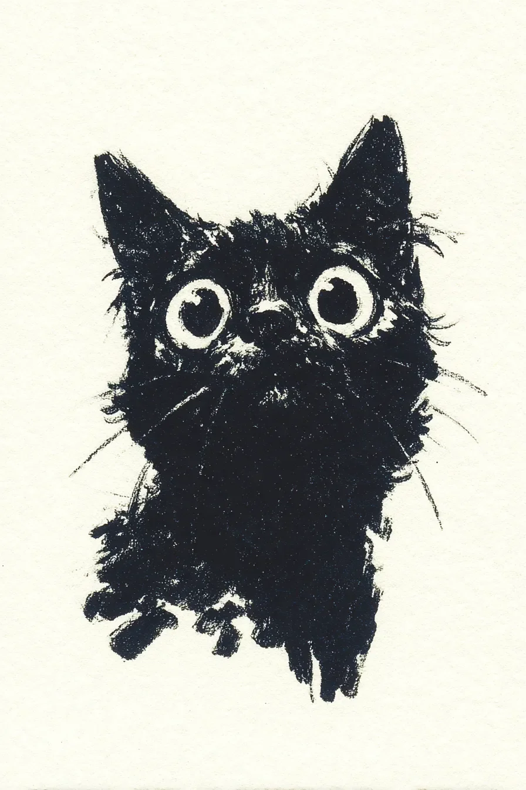

검은 고양이가 내 수학 숙제를 씹고 있었는데, 침으로 범벅된 분수들이 입가에 매달려 있었다.\
The black cat was chewing my math homework, fractions soaked in saliva dangling from its mouth.
선생님께 "고양이가 먹었어요"라고 말하면 아마 "개가 먹었다는 건 들어봤지만..."이라고 하실 거다.\
If I told the teacher "the cat ate it," she'd probably say "I've heard of dogs eating homework, but..."
고양이는 종이를 실제로 삼키지는 않고 찢어서 씹다가 뱉어내고 있었는데, 마치 음식 평론가가 맛을 보는 것처럼 신중했다.\
The cat wasn't actually swallowing the paper but tearing, chewing, and spitting it out, as deliberate as a food critic sampling cuisine.
"그거 중요한 거야!" 내가 외치자, 고양이는 잠깐 멈춰서 나를 보더니 더 큰 조각을 입에 넣었다.\
"That's important!" I shouted, and the cat paused to look at me before stuffing an even larger piece in its mouth.
축축하고 찢어진 종이 조각들이 바닥에 흩어져 있는 모습은 마치 수학의 무덤 같았다.\
The soggy, torn paper pieces scattered on the floor looked like a graveyard of mathematics.
고양이는 마지막 조각을 바닥에 떨어뜨리고는 털을 핥기 시작했는데, 완전히 만족스러운 표정이었다.\
The cat dropped the final piece on the floor and began grooming itself, looking completely satisfied with its work.